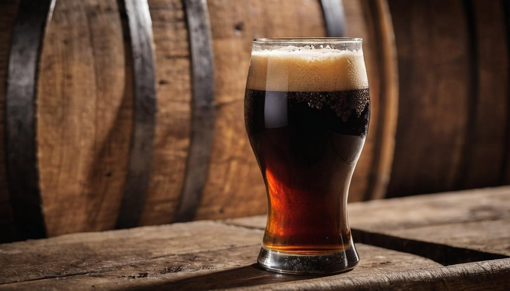

American Ales
Ale has been more than just a beverage; it's an element of culture and history that has captivated enthusiasts for centuries. You’ve probably tasted that hoppy bitterness or savored hints of caramel sweetness at your favorite beer festival or during a late-night homebrewing session. Understanding ale isn’t just about enjoying it—it’s about diving into its remarkable story and learning what makes each type so unique.
In this guide, we’ve gathered detailed information from seasoned brewers and historic records to bring you everything you need to know about ales. From pale ales that balance hop bitterness with malt sweetness to rich, dark stouts brimming with coffee flavors, you'll discover the intricate process behind crafting these beloved beverages. Alongside each type's origin story, you’ll find practical brewing tips designed to elevate your homebrewing game straight to impressive new heights.
Ale is a type of beer brewed with warm fermentation, typically using top-fermenting yeast at temperatures between 15 and 24°C. It has a rich history dating back to medieval times and comes in various styles such as Pale Ale, Scotch Ale, Summer Ale, and Old Ale, each with distinct flavors and characteristics. The brewing process involves fermenting malted barley, hops, water, and yeast to create the flavorful beverage known as ale.
Types of Ales
Ales come in various styles, each with its own unique flavor profile, color, and body. They encompass a wide spectrum of tastes and aromas that cater to different preferences and palates. Let's explore some of the most notable types of ales.
Pale Ale
Pale Ales are widely popular for their light color and balanced flavor. They typically feature a moderate hop bitterness and a slight malt sweetness, creating a refreshing and approachable taste. The term "pale" refers to its lighter amber or golden appearance compared to darker styles like stouts or porters. The use of pale malts in the brewing process contributes to this characteristic hue. Notably, the prominence of American Pale Ales has diversified this style, incorporating citrusy hop notes alongside traditional bittering agents, accommodating ever-evolving consumer preferences.
India Pale Ale (IPA)
Known for their strong hop flavor and higher alcohol content, IPAs hold a significant position in the realm of craft brewing. Originating in England, these robust ales were brewed with extra hops to preserve the beer during long sea voyages to India—a historical detail that inspired its name. Today's IPAs are revered for their bold, aromatic hop profiles, offering an array of fruit, floral, and resinous notes that captivate the senses. Furthermore, the resurgence of various IPA sub-styles such as New England IPAs, Double IPAs, and Session IPAs highlights the adaptability and innovation within this category.
Stout
Stout lovers revel in its rich, full-bodied character with flavors ranging from chocolate to coffee. Often crafted with roasted barley, stouts offer a deep and complex profile that is both satisfying and indulgent. The iconic Guinness stout exemplifies this style with its velvety texture and distinct roasted coffee notes—an enduring beacon in the world of stouts. Moreover, the emergence of craft breweries has led to an explosion of creativity within the stout category. Variations like oatmeal stouts, milk stouts, and barrel-aged stouts showcase brewers' ingenuity in infusing diverse adjuncts and aging processes into this timeless style.
Traversing through the diverse landscape of ale types reveals captivating narratives interwoven with cultural influences and modern innovations. The journey continues as we unravel more intriguing styles that have left an indelible mark on the world of craft brewing.
Key Ingredients
When it comes to crafting ales, every ingredient plays an instrumental role in shaping its character, flavor, and aroma. Let's dive into the four primary components: malts, hops, yeast, and water.
Malts
Malts are at the heart of ale production as they supply the essential sugars required for fermentation. They contribute not only sweetness but also the complexities of flavors and colors. For instance, pale malt is a common base malt known for its light color and mild flavor, while caramel malt adds a touch of sweetness and color. Roasted malt, on the other hand, imparts rich, smoky notes and deep hues to ales.
The process of malting involves soaking barley in water, allowing it to germinate, and then drying it in a kiln to halt germination. This results in the creation of enzymes that break down starches into fermentable sugars. The variety of malts used in brewing enables brewers to create a spectrum of flavors ranging from biscuity and nutty to chocolatey and roasty tones.
Hops
While malts provide the sweet foundation, hops introduce a balancing bitterness, exciting aromas, and act as natural preservatives. Different hop varieties such as Cascade, Amarillo, or Saaz offer distinct taste profiles and aromatic characteristics.
For example, the Cascade hop is celebrated for its floral and citrusy aromas, contributing to the refreshing zest found in many pale ales. In contrast, Saaz hops are favored for their delicate herbal and spicy notes that enhance the earthy undertones in traditional European ales.
Yeast
The type of yeast used significantly influences ale’s final taste and aroma. Ale yeast, scientifically known as Saccharomyces cerevisiae, operates best at warmer temperatures compared to lager yeast. This results in more expressive fruity esters and complex flavors that define ales.
Think of yeast as the conductor steering the symphony of flavors during fermentation – influencing whether an ale will boast crisp, citric notes or dive into deeper fruity profiles with hints of cloves or banana.
Water
Often overlooked but crucial, water greatly impacts the taste of ale. Its mineral content and pH levels vary by region, contributing historical significance to distinctive beer styles originating from different areas.
For instance, the renowned Burton-on-Trent has high sulfate levels that enhance hop bitterness, giving rise to its famed bitter ales. Meanwhile, Dublin's softer water is esteemed for producing stouts with smoother mouthfeels.
Your understanding of these foundational ingredients illuminates the artistry behind creating diverse ale styles rooted in intricate flavor profiles and cultural heritage.
The origin stories of these foundational ingredients lay the groundwork for understanding how cultural backgrounds have contributed to brewing practices globally.
Historical Background
The history of ale is akin to an ancient tapestry, woven with threads of tradition, innovation, and cultural evolution. It's a story that stretches back over 6,000 years to the fertile lands of ancient Mesopotamia, where our ancestors crafted early forms of beer from barley. These early brewers discovered that soaking grains in water over time created a delicious and refreshing drink.
As civilization advanced, so did our methods of brewing. In medieval Europe, ale became a crucial part of daily life, providing nourishment and sustenance in an era with fewer food options. During this time, brewing was primarily led by women for domestic consumption as well as small-scale commercial ventures. The importance of ale in Medieval Europe cannot be overstated; it filled bellies and lifted spirits during times of scarcity and hardship.
Evolution through Centuries
Ale underwent an intriguing transformation in the 9th century when hops were first introduced, adding a delightful bitterness to balance the sweetness of malt and acting as a natural preservative. This pivotal moment marked the beginning of a more diverse beer landscape, paving the way for countless variations and styles seen today. From gruit herbs in the Middle Ages to cutting-edge craft brewing techniques, each historical period has left its mark on the ever-evolving story of ale.
In medieval times, ale recipes relied on gruit, a mixture of herbs or spices, for bitterness before the widespread use of hops. This shift from gruit to hops not only revolutionized the flavor profile of ales but also enhanced their keeping qualities, allowing for easier transportation and storage.
Through the ages, from ancient civilizations to the vibrant craft breweries of today, ale has remained a constant companion, adapting and evolving to reflect the tastes and traditions of each era. This rich historical background serves as a reminder: every bottle of ale holds within it centuries of tradition and innovation.
As you sip your favorite brew, take a moment to consider the remarkable journey that brought it to your glass—a journey spanning countless generations and cultures, shaping the very essence of this beloved beverage.
Craft Brewing Process
Craft brewing is an exhilarating combination of science and art. Each stage of the process is vital in shaping the unique flavors and characteristics of ale. Let's break down the six pivotal steps involved in crafting this beloved beverage.
Step I - Malting
The journey begins with barley grains undergoing malting, where they are soaked in water to stimulate germination. This triggers the development of essential enzymes required to convert starches into fermentable sugars. Once sufficiently germinated, the grains are dried using warm air, readying them for the next crucial phase of the process.
Step II - Mashing
In mashing, the malted barley meets hot water in a union, creating wort. During this enchanting encounter, specific enzymes activate to transform starches into fermentable sugars. The resulting elixir, packed with flavor potential, serves as the foundation for the delectable ale to come.
Step III - Boiling
As the wort takes center stage, it descends into a bubbling cauldron for boiling. Here, hops make their grand entrance, lending bitterness and aroma to the enchanting brew. Beyond adding depth of flavor, this scorching baptism serves a crucial sterilizing purpose, ensuring that our mystical concoction remains safe and untainted.
Step IV - Fermentation
Once the wort has basked in its hoppy adornments, it is time for fermentation. Ale yeast—the maestro behind the transformation of sweet wort into intoxicating ale—initiates a captivating metamorphosis at warmer temperatures. It's during this period that flavors unfold and effervescent magic transpires.
Step V - Conditioning
Following fermentation comes the intriguing phase of conditioning. Here, the fledgling ale is carefully aged to nurture and enhance its precious flavors and carbonation levels. The duration of this maturation can span from a few weeks to several months, dictated by the distinct style being crafted.
Step VI - Packaging
With its character seasoned and refined, our ale is now primed for its grand appearance on store shelves or in your frosty mug. In packaging, the finished masterpiece is meticulously filtered, carbonated if needed, and bestowed into bottles, cans, or kegs—ready to share its story with eager beer enthusiasts around the world.
Each step holds within it elements of artistry and precision—culminating in a delightful concoction that transcends mere drinkability, offering an immersive experience for every enthusiast.
The craft brewing process infuses each ale with unparalleled depth and character. Now we embark on a flavorful journey through the diverse and intriguing world of unique ale flavors.
Unique Flavors

Ales bring an extraordinary diversity of flavors to the table – from sweet, fruity esters to earthy, hop-derived bitterness. The interplay between different ingredients and brewing techniques is responsible for the astonishing spectrum of tastes characteristic of ales.
When it comes to the taste profile of ales, it's all about the artful dance between malt, hops, and yeast. Ale yeast imparts distinctive fruity esters, unlocking a treasure trove of flavors like apple, pear, and even banana. This contributes to the delightful variety found in Belgian-style ales known for their complex and robust flavor profiles.
Yeast plays a crucial role in shaping the flavor of ales through its fermentation process, offering a broad canvas for brewers to create an array of fruity and spicy notes.
Specialized malt varieties bring their own unique flavors to the party. Picture this: Caramel, toffee, and even chocolate all possess the potential to emerge from a well-crafted ale, adding rich and indulgent layers to its taste.
Interestingly, hops further elevate the symphony of flavors with their myriad characteristics. Whether it's the zesty burst of citrus or the refreshing aroma of pine, hops play a pivotal role in determining the bitterness and aroma that define different ale styles. These floral and citric overtones add depth and complexity to the brew, ensuring that each sip is an adventure for the taste buds.
For instance, pale ales are celebrated for their balanced bitterness with citrus and floral notes, while stouts boast rich, roasted malt flavors with hints of coffee and chocolate. The famous IPA embodies strong hop bitterness complemented by tropical fruit and pine aromas. And let's not forget about Belgian ales—fruity and spicy with a complex yeast character that's truly distinctive.
Ultimately, every stage of the brewing process contributes its own special touch to these enchanting flavor profiles. From fermenting at particular temperatures to choosing specific malts and hops - each decision paves the way for an unparalleled drinking experience.
In essence, it's this breathtaking interplay between ingredients and processes that makes ale such a versatile and complex beverage, offering a delightful journey through a tapestry of flavors.
Popular Ale Styles
Now that we've set the stage with unique flavors, let's take a closer look at some of the most beloved styles of ales. From the classic English Bitter to the robust Barleywine, each style offers a distinctive taste experience.
English Bitter
The English Bitter is a time-honored classic praised for its well-balanced blend of malt sweetness and hop bitterness. What sets it apart is its lower carbonation level, giving it a smooth and quaffable character. This style brings together pleasing biscuity notes from malt with earthy, herbal hop aromas, creating an harmonious and easy-drinking ale that embodies tradition and craftsmanship.
Scottish Ale
In contrast to the English Bitter, the Scottish Ale delivers a richer, malt-forward profile with minimal hop bitterness. This style showcases deep caramel and toffee flavors that provide a comforting sweetness, making it a go-to choice for those appreciating hearty, warming brews. The Scottish Ale's robust yet approachable nature has earned it a dedicated following among beer enthusiasts seeking depth and complexity in their drinks.
Saison
The Saison stands out as a true Belgian farmhouse ale, celebrated for its dry finish and intriguing interplay of fruity and spicy notes, courtesy of distinctive yeast strains. Its lively effervescence and expressive aromatics make it a delightful choice for those seeking an adventurous yet refreshing drinking experience. With its roots in Belgian brewing tradition, the Saison captures the essence of artisanal craftsmanship while offering a captivating blend of flavors.
Barleywine
Rounding out our exploration is the formidable Barleywine—a style renowned for its boldness and strength. Embodying rich and complex malt flavors alongside significant hop bitterness, particularly in American versions, this robust ale category delivers a potent and indulgent drinking experience. With its high alcohol content and dense character, Barleywine invites aficionados to savor its intense, layered profile over slow contemplation.
Each of these popular ale styles carries an individual charm, showcasing the diversity and artistry that define the world of craft brewing. Whether you lean towards the timeless allure of English Bitter or seek out the boldness of Barleywine, there's no shortage of captivating options to explore within the realm of ales.
Exploring the rich tapestry of ale styles opens up a world of flavor and tradition waiting to be savored. Cheers to the diverse range of options that cater to every beer enthusiast's palate!